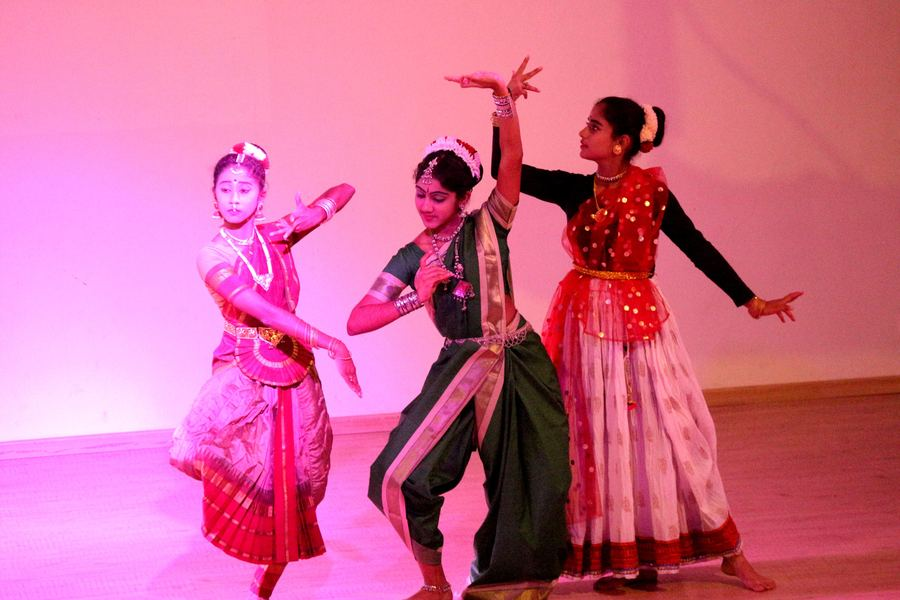

01 July–August
Raksha Bandhan
Unfamiliar at first, students develop an unbreakable bond as brothers vow to protect their sisters. The programme begins with Krishnaji being tied the first rakhi. Siblings share their moments of love and mischief with the entire school during the morning pooja.
Then, while rakhis are being knotted, the school resonates with wishes and chocolate requests. As dusk falls, the brothers surprise their sisters with an emotional, relatable and heartfelt programme.